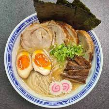

Ichiraku Ramen Recipe

Description
Today, I decided to post the recipe and instructions on how to make your own Ichiraku Ramen. However, to make this inclusive for all readers, I’m going to give you the recipe using the ramen noodles that you probably have at home. Enjoy!
Ingredients
- Two packs of ramen noodles of your choice.
- 5 cups of beef broth (You can use the stuff in the package as a substitute.)
- 2 Eggs
- 1 Baby bok choy
- 1 Green Onion
- Soy Sauce
- Aburage x5
- Nori
- Kamaboko x3
Steps
- Preheat your stove to 450 degrees. From there, start to cook the pork tenderloin for 10-15 minutes, or until it’s well done.
- Make a pot of water and place your two eggs in the pot with enough water to submerge them. It should take about 10 minutes to hard boil the eggs. Take them out and place them in cold water when they are done.
- Next, pour in the 5 cups of broth and let it simmer. You can add soy sauce or your own custom ingredients as well.
- Once the broth begins to simmer, add the ramen noodles. DO NOT add any flavor packets. The noodles have to cook first.
- Now, it’s time to prepare the toppings. Peel the eggs and slick them in half. What you do with the rest is up to you. Then, neatly slice the pork tenderloin, kamaboko, bok choy, aburage, and green onion into thin slices.
- When the noodles are done cooking, place the broth in a deep bowl and the noodles next. Then, place all of the ingredients in groups above the noodles until it looks neat. You can use the picture below for a guide.